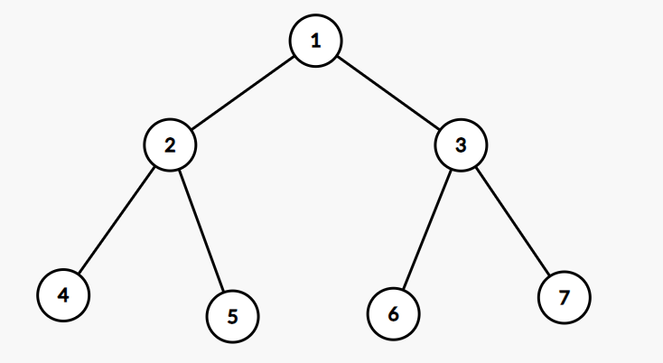

算法导论20.1 Exercises 答案
20.1-1
我们只需要遍历整个邻接表，并且遍历这个节点下的邻接表即可计算出这个链表的大小，也就是这个点的出度。因此计算所有节点的出度的开销为\(\Theta(|V|+|E|)\)。
至于入度，我们仅需要维护一个大小为\(|V|\)的计数器，并且遍历邻接表中，某个节点被其它节点指向的个数即可。因此计算所有节点的入读的开销仍然为\(\Theta(|V|+|E|)\)。
20.1-2
假设这棵完全二叉树的形状如下：

那么这个图的邻接表和邻接矩阵分别为：
\[\begin{aligned} &1:2\rightarrow 3\\ &2:1\rightarrow4\rightarrow5\\ &3:1\rightarrow6\rightarrow7\\ &4:2\\ &5:2\\ &6:3\\ &7:3 \end{aligned}\qquad\begin{array}{l|llllll} & 1 & 2 & 3 & 4 & 5 & 6 & 7\\ \hline 1 & 0 & 1 & 1 & 0 & 0 & 0 & 0 \\ 2 & 1 & 0 & 0 & 1 & 1 & 0 & 0 \\ 3 & 1 & 0 & 0 & 0 & 0 & 1 & 1 \\ 4 & 0 & 1 & 0 & 0 & 0 & 0 & 0 \\ 5 & 0 & 1 & 0 & 0 & 0 & 0 & 0 \\ 6 & 0 & 0 & 1 & 0 & 0 & 0 & 0 \\ 7 & 0 & 0 & 1 & 0 & 0 & 0 & 0 \\ \end{array}\]
20.1-3
邻接表：
1 | ADJACENCY-LIST-TRANSPOSE(G) |
这个算法外循环遍历了每个节点，所有内循环的总和恰好遍历了每一条有向边，因此运行时间为\(\Theta(|V|+|E|)\)。
邻接矩阵：
1 | ADJACENCY-MATRIX-TRANSPOSE(G) |
这个算法的两重循环遍历了每个节点，因此运行时间为\(\Theta(|V|^2)\)。
20.1-4
1 | EQUIVALENT-UNDIRECTED-GRAPH(G) |
在节点为\(u\)的外循环中，当节点\(v\)已经被访问过，那么有vis[v] == u，否则这条边还不存在，可以添加。
外循环恰好遍历了图\(G\)中的所有节点，内循环恰好遍历了图中的所有边，而if语句内的程序都可以通过常数时间完成。因此整个程序EQUIVALENT-UNDIRECTED-GRAPH的运行时间为\(\Theta(|V|+|E|)\)。
20.1-5
邻接表：
1 | fADJACENCY-LIST-SQUARE(G) |
前两个循环恰好遍历了图中的每个节点和每条边。可以知道，第三重循环的上界是每个节点\(v\)都存在G.Adj[v]中。因此前6行的程序的运行时间为\(O(|V||E|)\)，第7行程序则将题目20.1-4的程序作为子程序运行，运行时间为\(O(|V|+|V||E|)\)。因此将所有运行时间相加，最终得到ADJACENCY-LIST-SQUARE(G)的运行时间为\(O(|V||E|)\)。
邻接矩阵：
1 | fADJACENCY-MATRIX-SQUARE(G) |
其中，子程序Strassen2是可以计算任意方形矩阵乘法的算法（使用Strassen了算法），因此第3行的时间复杂度为\(\Theta(|V|^{\lg
7})\)。此后，第4-6行的程序是考虑有直接相连的边，这3行程序的时间复杂度为\(\Theta(|V|^2)\)。因此总时间复杂度为\(\Theta(|V|^{\lg 7})\)。
20.1-6
题目本质上是通过\(O(n)\)的时间复杂度，判断一个01矩阵\(A\)是否存在一个\(k\)，使得对于所有\(i\neq k,a_{ki}=0,a_{ik}=1\)均成立。
可以写出如下程序判断\(G\)是否含有汇点：
1 | IS-CONTAIN-UNIVERSAL-SINK(G) |
其中，主程序IS-CONTAIN-UNIVERSAL-SINK用于判断图\(G\)是否有汇点；子程序IS-SINK则用于判断节点\(k\)是否为\(G\)的汇点。
可以发现，IS-CONTAIN-UNIVERSAL-SINK中的while循环最多只会执行\(2|V|-2\)次，判断汇点的时间复杂度是\(\Theta(|V|)\)，因此整个算法的时间复杂度是\(O(V)\)。
正确性：由于\(a_{ii}=0\)，因此在迭代的过程中，变量\(i,j\)总满足\(i\le
j\)。在while循环结束时，必定有\(i< j\)，因此需要额外判断节点\(|V|\)是否为汇点。当while循环停下时，对于\(k\in
[1,i)\)，它们被第4行的代码遍历过，也就是说，这些节点有出边，因此不可能是汇点。对于\(k\in (i,|V|]\)，都有\(a_{ki}=0\)，这些节点没有来自\(i\)的入边，因此不可能是汇点，因此只需要对节点\(i\)进行判断即可。
20.1-7
可以得到
\(\begin{aligned} (bb^T)_{ij}=\sum_{e=1}^{|E|} b_{ie} \cdot b_{ej}^T=\sum_{e=1}^{|E|} b_{ie}\cdot b_{je} \end{aligned}\)
那么，
当\(i=j\)时，\(b_{ii}=\displaystyle{\sum_{e=1}^{|E|} b_{ie}^2=\sum_{e=1}^{|E|} |b_{ie}|}\)，那么\(b_{ii}\)是节点\(i\)的出度和入度之和。
当\(i\neq j\)时，如果这是一条有向边\((i,j)\)，那么\(b_{ie}b_{je}=-1\)，否则\(b_{ie}b_{je}=0\)。因此\(b_{ij}\)是有向边\((i,j)\)的条数的负数。
20.1-8
期望的查询时间复杂度为\(O(1)\)。缺陷在于如果散列表设计不佳，有可能一次查询就达到了最坏的时间复杂度\(O(|V|)\)。
在添加完所有边后，可以考虑用一个向量存储G.Adj[u]并排序，并且使用二分查找来进行判断节点\(v\)是否在其中。缺点如下：
- 这种做法的期望时间复杂度为\(O(\lg n)\)，高于使用散列表时的\(O(1)\)。
- 如果这张图是动态变化的，那么添加一条新边时开销很大（使用插入排序的思想进行插入）。为了解决这个问题，可以使用树结构解决。